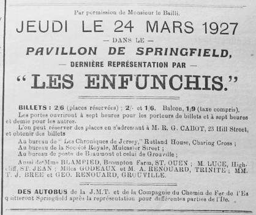

J'sis bein aise de saver qu'nous n'en a pon encouorre fini avec chutte triste famille des Enfuntchis

J'sis bein aise de saver qu'nous n'en a pon encouorre fini avec chutte triste famille desEnfuntchis d'pis qu'nous pouorra les vais à nouveau à Springfield l'mais tchi veint.
J'pense que Ted, de Rose Farm, en s'ra bein aise car oprès aver ieut un gardin potager couomme présent à la séthée dans l'Town Hall, p't'être bein que l'autre présent s'ra bein utile pouor son montage de ferme.
N'v'la qui fut un biau présent et j'comprends pon couomment rein n'fut mins sus les gazettes à l'entour de chutte présentation.
L'tout était bein enveloppé et quant l'Ted le dépatchi y trouvi un ''Brussel Sprout,'' couomme nous appelle ichin un chou de Bruxelles et au bout de wires il y avait d'amathé trais panais, trais carottes, trais poirées, un miot de bricolli, un miot de caboche, du persil et du timbre, de tchi faithe une buanne soupe avec un miot de viande bé seur.
Et notre Ted emporti l'touot sièz ly pouor en faithe présent à sa Missis.
****
Il y a hardi de marcherie achteu dans la paraisse de St. Ou et j'en sais p't'être un p'tit pus long que nous n'crait et pus que j'n'dirai quant achteu.
Couomme nous sait Jack d'la rue à l'ieau est à son touot seu mais si pouor les viaux y n'offre que de l'ieau quant à ses amins ils auront d'chi un miot pus fort pouor lus récauffer la séthée du ''nomination meeting''.
Nous dit que Jack est quarante vouaix drièthe, n'v'la qui s'peut mais ch'n'est pon ly qui s'laissera effriter couomme y dit et pouor seur y n'boltera pon à la dernièthe minute à chein que je l'ai oui dithe.
Dolphus ly dit que l'parti du luothi n'est pon couomme la banque Massiot et qui reste encouore du cliou. Ch'est vrai chunna et Dolphus est bein décidé à faithe l'nécessaire.
J'pouorrais p't'être vos en arconter un 'ptit pus long mais quant achteu j'aime mus taithe ma becque.
****
Chunna s'passit la s'maine passée et ch'est la pure, pleine et entièthe vérithèt, fouai de Marie Hibou.
Au milieu d'la nièt, des gens futes réveilli par du tintamarre et couomme dans les gazettes nous avait mins que des voleurs s'étaient introduits dans le Temple paroissial de chutte paraisse, n'v'la nos gens qui futes prins de peur et prêt à s'mucchi dans tchique carre d'lus chambre. Bé seur ch'tait tchiqu'un qui était dans la chambre du buanhomme.
Un p'tit temps oprès n'v'la l'buanhomme qui d'vale l'escalier quassiment mouillé jusqu'à la pé couomme un canard dans l'ieau et y raconti à ses gens qu'il avait été réveilli par la fraid ès pids mais n'y avait pon fait grand attention quant un p'tit oprès tchique chose l'y tombi sus la fache et le réveilli et ayant satchi une allumette il vit que son lièt était couomme une tank à ieaue. Et pouor n'être pon nié y s'tait empressé de s'déshaller et de sauter a bas de san lié.
Et touot chunna viyant qui versait d'pluie et que deux ardoises du roof avaient été enlevées par l'vent.
L'pouorre vi dut passer l'restant de sa nièt sus un couch.
Marie Hibou
5/2/1927
Viyiz étout: